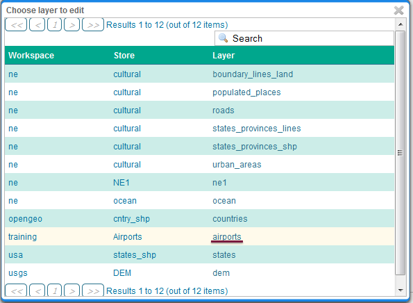
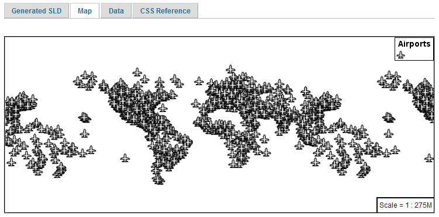
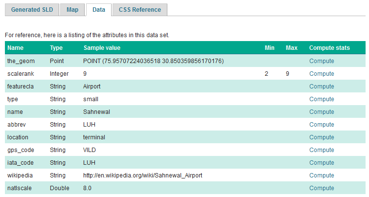

5.1. MBStyle Quickstart¶
In the last section, we saw how the OGC defines style using XML documents (called SLD files).
We will now explore GeoServer styling in greater detail using a tool to generate our SLD files. The MBStyle GeoServer extension is used to generate SLD files using the MabBox Style styling language. Styles written in this language can also be used to style vector tiles in client-side applications.
Using the MBStyle extension to define styles results in shorter examples that are easier to understand. At any point we will be able to review the generated SLD file.
Reference:
5.1.1. MBStyle Syntax¶
This section provides a quick introduction to MBStyle syntax for mapping professionals who may not be familiar with JSON.
5.1.1.1. JSON Syntax¶
All MBStyles consist of a JSON document. There are three types of structures in a JSON document:
Object, a collection of key-value pairs. All JSON documents are JSON objects.
Array, a collection of values.
Value, the value in a key-value pair, or an entry in an array. Values can be objects, arrays, strings, numbers, true, false, or null.
Object |
A collection of key-value pairs, enclosed by curly braces and delimited by commas. Keys are surronded by quotes and seperarted from values by a colon. |
Array |
A collection values, enclosed by square brackets and delimited by commas. |
String |
Text value. Must be surrounded by quotes. |
Number |
Numerical value. Must not be surrounded by quotes. |
Boolean |
true or false. |
Null |
null. Represents an undefined or unset value. |
5.1.1.2. MBStyle Specification¶
The Mapbox Style specification defines a number of additional rules that MBStyles must follow.
5.1.1.2.1. Root-level Properties¶
Root level properties of a Mapbox style specify the map’s layers, tile sources and other resources, and default values for the initial camera position when not specified elsewhere.
The following root-level properties are required for all MBStyles. Additional root-level properties which are supported but not required can be found in the spec.
version |
The version of the Mapbox Style specification to use. Must be set to 8. |
name |
The name of the style. |
sources |
An object defining the source data. Not used by GeoServer. |
layers |
An array of layer style objects |
For example:
{
"version": 8,
"name": "Streets",
"sources": {...},
"layers": [...]
}
5.1.1.2.2. Sources¶
The sources parameter consists of a collection of named sources which define vector tile data the style is to be applied to. This is only used for MBStyles used in client-side applications, and is ignored by GeoServer. If you are only using MBStyles to style your layers within GeoServer, you don’t need a sources parameter. However, if you also want to use your MBStyles for client-side styling, you will need the sources parameter.
A GeoServer vector tile source would be defined like this:
{ "cookbook": { "type": "vector", "tiles": [ "http://localhost:8080/geoserver/gwc/service/wmts?REQUEST=GetTile&SERVICE=WMTS&VERSION=1.0.0&LAYER=cookbook&STYLE=&TILEMATRIX=EPSG:900913:{z}&TILEMATRIXSET=EPSG:900913&FORMAT=application/vnd.mapbox-vector-tile&TILECOL={x}&TILEROW={y}" ], "minZoom": 0, "maxZoom": 14 } }
5.1.1.2.3. Layers¶
The layers parameter contains the primary layout and styling information in the MBStyle. Each layer in the layers list is a self-contained block of styling information. Layers are applied in order, so the last layer in the layers list will be rendered at the top of the image.
Note
A layer in an MBStyle is not the same as a layer in GeoServer. A GeoServer layer is a raster or vector dataset that represents a collection of geographic features. A MBStyle layer is a block of styling information, similar to a SLD Symbolizer.
<Example>
Reference:
MBStyle Styling (User Guide)
5.1.2. Compare MBStyle to SLD¶
The MBStyle extension is built with the same GeoServer rendering engine in mind, providing access to most of the functionality of SLD. The two approaches use slightly different terminology: SLD uses terms familiar to mapping professionals, while MBStyle uses ideas more familiar to web developers.
5.1.2.1. SLD Style¶
Here is an example SLD file for reference:
1 2 3 4 5 6 7 8 9 10 11 12 13 14 15 16 17 18 19 20 21 22 23 24 25 26 27 28 29 30 | <?xml version="1.0" encoding="ISO-8859-1"?>
<StyledLayerDescriptor version="1.0.0"
xsi:schemaLocation="http://www.opengis.net/sld StyledLayerDescriptor.xsd"
xmlns="http://www.opengis.net/sld"
xmlns:ogc="http://www.opengis.net/ogc"
xmlns:xlink="http://www.w3.org/1999/xlink"
xmlns:xsi="http://www.w3.org/2001/XMLSchema-instance">
<NamedLayer>
<Name>airports</Name>
<UserStyle>
<Title>Airports</Title>
<FeatureTypeStyle>
<Rule>
<Name>airports</Name>
<Title>Airports</Title>
<PointSymbolizer>
<Graphic>
<ExternalGraphic>
<OnlineResource xlink:type="simple"
xlink:href="airport.svg" />
<Format>image/svg</Format>
</ExternalGraphic>
<Size>16</Size>
</Graphic>
</PointSymbolizer>
</Rule>
</FeatureTypeStyle>
</UserStyle>
</NamedLayer>
</StyledLayerDescriptor>
|
5.1.2.2. MBStyle Style¶
Here is the same example as MBStyle:
1 2 3 4 5 6 7 8 9 10 11 12 13 14 | {
"version": 8,
"name": "airports",
"sprite": "http://localhost:8080/geoserver/styles/sprites",
"layers": [
{
"id": "airports",
"type": "symbol",
"layout": {
"icon-image": "airport"
}
}
]
}
|
We use a point symbolizer to indicate we want this content drawn as a Point (line 16 in the SLD, line 8 in the MBStyle). The point symbolizer declares an external graphic, which contains the URL airports.svg indicating the image that should be drawn (line 20 in the SLD, line 10 in the MBStyle).
Note
Rather than refer to many diffferent icons seperatly, MBStyles use a single spritesheet containing all the necessary icons for the style. This is defined by the sprite property at the top-level of the style.
5.1.3. Tour¶
To confirm everything works, let’s reproduce the airports style above.
Navigate to the Styles page.
Each time we edit a style, the contents of the associated SLD file are replaced. Rather then disrupt any of our existing styles we will create a new style. Click Add a new style and choose the following:
Name:
airports0
Workspace:
(leave empty)
Format:
MBStyle
Replace the initial MBStyle definition with with our airport MBStyle example and click Apply:
{ "version": 8, "name": "airports", "sprite": "http://localhost:8080/geoserver/styles/sprites", "layers": [ { "id": "airports", "type": "symbol", "layout": { "icon-image": "airport" } } ] }
Click the Layer Preview tab to preview the style. We want to preview on the aiports layer, so click the name of the current layer and select ne:airports from the list that appears. You can use the mouse buttons to pan and scroll wheel to change scale.
Choosing the airports layer¶
Layer preview¶
Click Layer Data for a summary of the selected data.
Layer attributes¶
5.1.4. Bonus¶
Finished early? For now please help your neighbour so we can proceed with the workshop.
If you are really stuck please consider the following challenge rather than skipping ahead.
5.1.4.1. Explore Data¶
Return to the Data tab and use the Compute link to determine the minimum and maximum for the scalerank attribute.
5.1.4.2. Challenge Compare SLD Generation¶
The rest API can be used to review your YAML file directly.
Browser:
Command line:
curl -v -u admin:geoserver -XGET http://localhost:8080/geoserver/rest/styles/airports0.json
The REST API can also be used generate an SLD file:
Browser:
Command line:
curl -v -u admin:geoserver -XGET http://localhost:8080/geoserver/rest/styles/airports0.sld?pretty=true
Compare the generated SLD differ above with the hand written
SLD fileused as an example?Challenge: What differences can you spot?